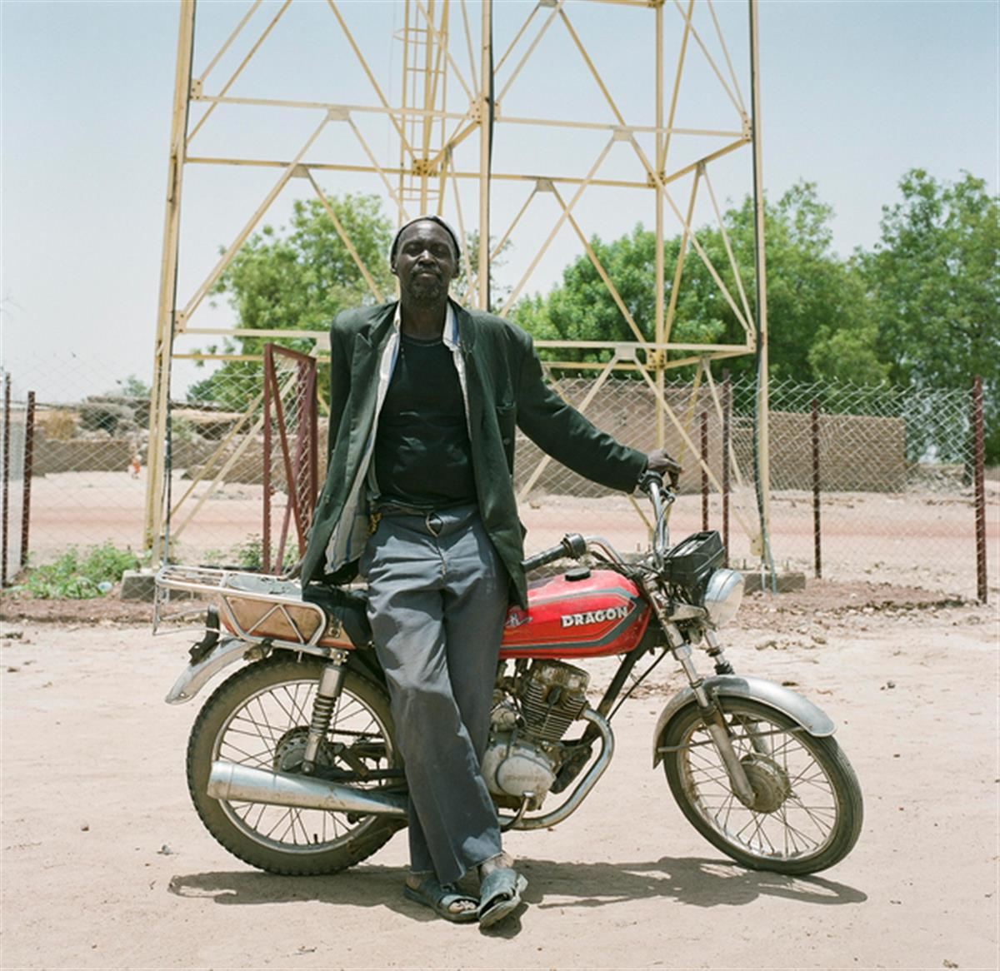
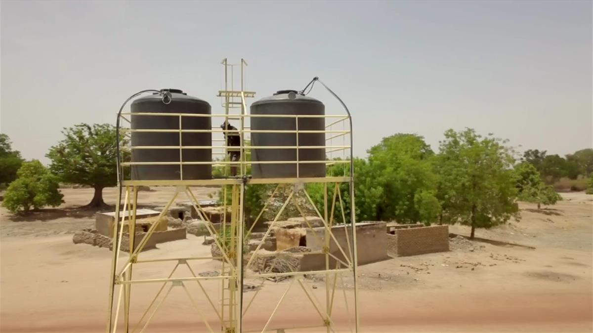
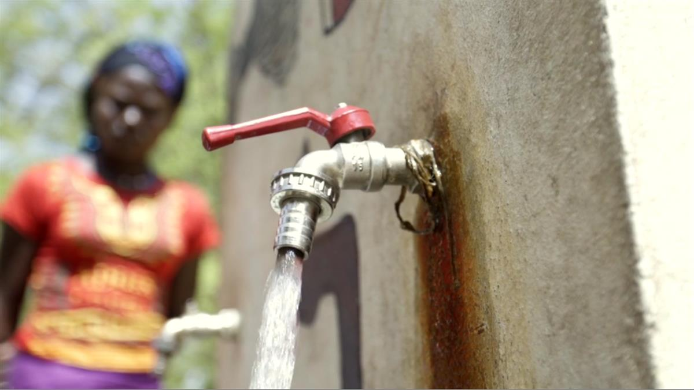
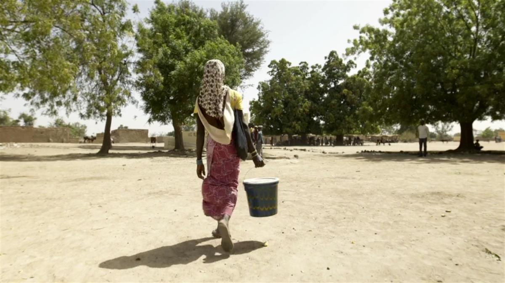
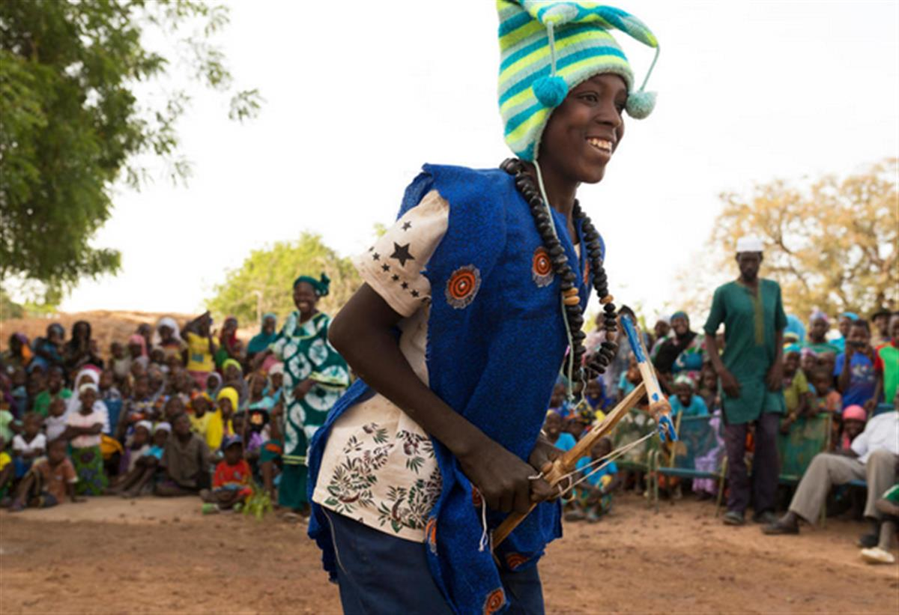

WaterAid/Guilhem Alandry
Featured Archive Story
SOURCE: WATER AID
It's not unlike a scene from a Western. The figure of Souleymane Diallo shimmers through the heat haze as he rides across Samabogo's arid landscape, ready for action. He’s a man with one job to do: keep his town’s water flowing.
Souleymane is a carpenter by trade. In his regular business, he makes donkey carts and bed frames to support his family, in Mali’s Bla district.
But since WaterAid worked with the community he calls home to install a life-changing water tower, he has undertaken a second job as one of Samabogo’s water mechanics.
Open on original site ↗Souleymane explains what the job entails: 'Imagine that there is a small problem, that a tap stand is broken down and you have to have someone travel from far away from here to fix it, it is time consuming and it is costly. That is why it is important that someone in the community can be able to fix it.'
Technology like these water towers helps us to bring about a world where everyone, everywhere has clean water. But it’s the people willing to go the extra mile that makes change stick.




WaterAid/Guilhem AlandryHow WaterAiders change lives in Mali
Since 2012, landlocked Mali has been immersed in a political and security crisis, which has had devastating effects on the economy and the lives of ordinary people.
In Bla, the region Souleymane calls home, nearly half of the population don’t have clean water close to home. To make matters more complicated, Mali’s environment is fragile. As for many other communities across the world, a changing climate disrupts water security.
From WaterAid supporters in the UK to hardworking local partners, we are banding together to find inventive ways to make sure nobody in Bla has their access denied to their right to water.

WaterAid/Guilhem Alandry
The Troupe Djonkala; a group of actors and musicians who travel from village to village across the Bla district in Mali to promote better sanitation and hygiene practices through the arts
Keep the water flowing
“I just imagine that we were waiting for this facility a long time ago,' says Souleymane. 'Now we've got it and so now I just stand up there and I'm happy.”
But Souleymane doesn’t want work to stop until the rest of his region, and his country, can have that same feeling.
SOURCE: WATER AID